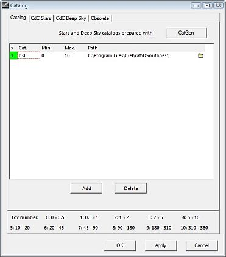
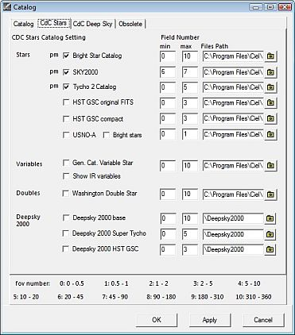
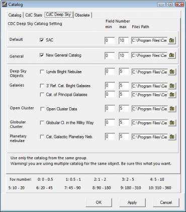
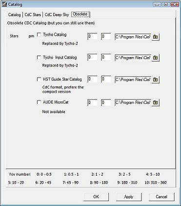

Catàlegs
La configuració dels catàlegs té quatre pestanyes:
Catàlegs
 Aquí hi podeu afegir i activar tota classe de catàlegs externs preparats prèviament per a Cartes del Cel amb la utilitat CatGen .Catgen es pot invocar amb el botó CatGen de dalt a la dreta de la finestra del menú Configuració → Catàlegs. Llegiu més sobre com crear catàlegs nous o adaptar els existents per a Cartes del Cel amb la utilitat Catgen.
{kind=link}
Abans de poder afegir un catàleg nou, cal que afegiu una línia on descriureu la seva configuració. (També podríeu eliminar una línia seleccionada prement el botó “Suprimeix”)
A continuació, cal que indiqueu el camí on es troba el nou catàleg. Feu clic en la icona directori a la dreta de la línia i navegueu per trobar el camí correcte. Podeu tenir el directori amb els vostres catàlegs externs a qualsevol lloc de l'ordinador, però en general és una bona idea posar-los com a subdirectoris del directori cat en la carpeta d'instal·lació de Cartes del Cel. En el directori del vostre catàleg hi ha d'haver un fitxer amb l'extensió .hdr que conté la descripció del catàleg. Seleccioneu el fitxer .hdr. En cas d'error, la primera cel·la de la línia estarà en vermell.
Estels CdC

Per activar o desactivar un catàleg marqueu-ne la casella.
En la situació normal, Cartes del Cel cercarà els catàlegs en els camins preconfigurats on el programa assumeix que hi ha els catàlegs. Si el catàleg no es troba en el directori estàndard, el camp Directori estarà vermell. Useu el botó petit de la dreta per especificar el camí correcte de la carpeta on es troba el catàleg.
No us espanteu si no trobeu el camí adient. A causa de les seves mides, no tots els catàlegs vénen amb la instal·ació inicial de Cartes del Cel, potser us caldrà instal·lar el catàleg. Feu clic aquí per ampliar informació sobre la instal·lació de catàlegs nous. El Deepsky 2000 és un paquet de catàlegs que no s'obté de franc; el podeu comprar aquí.
En el camp de la columna mín, entreu-hi el mínim nombre del camp de visió a usar en aquest catàleg tal com està descrit al peu del quadre. Una bona elecció per començar seria posar-hi 0, altrament al fer zoom d'augment podria resultar en deixar de veure objectes que eren visibles amb un camp de visió més gran.
En el camp de la columna màx, entreu-hi el nombre del camp de visió més gran a usar en aquest catàleg.
Per al millor comportament eviteu que diversos catàlegs se solapin en l'interval dels respectius camps de visió. Podríen aparèixer objectes duplicats en el mapa, ja que sovint els catàlegs no coincideixen exactament en els valors de les coordenades dels objectes.
{kind=link}
Els catàlegs marcats amb “mp” tenen informació sobre el “moviment propi”. El programa usa el moviment propi quan calcula la posició de l'objecte per a la data actual.
Podeu fer que es mostri el moviment propi per un període de 1-9999 anys per mitjà d'una línia. Vegeu Moviment propi
Podeu configurar com es mostren els estels amb la pestanya Color des del menú Configuració → Presentació. Podeu alternar que els estels es mostrin o no en el mapa prement la icona  en la barra d'objectes.
en la barra d'objectes.
Cel profund CdC

Per activar o desactivar un catàleg marqueu-ne la casella.
En la situació normal, Cartes del Cel cercarà els catàlegs en els camins preconfigurats on el programa assumeix que hi ha els catàlegs. Si el catàleg no es troba en el directori estàndard, el camp Directori estarà vermell. Useu el botó petit de la dreta per especificar el camí correcte de la carpeta on es troba el catàleg.
No us espanteu si no trobeu el camí adient. A causa de les seves mides, no tots els catàlegs vénen amb la instal·ació inicial de Cartes del Cel, potser us caldrà instal·lar el catàleg. Feu clic aquí per ampliar informació sobre la instal·lació de catàlegs nous.
En el camp de la columna mín, entreu-hi el mínim nombre del camp de visió a usar en aquest catàleg tal com està descrit al peu del quadre. Una bona elecció per començar seria posar-hi 0, altrament al fer zoom d'augment podria resultar en deixar de veure objectes que eren visibles amb un camp de visió més gran.
En el camp de la columna màx, entreu-hi el nombre del camp de visió més gran a usar en aquest catàleg.
Per al millor comportament eviteu que diversos catàlegs se solapin en l'interval dels respectius camps de visió. Podríen aparèixer objectes duplicats en el mapa, ja que sovint els catàlegs no coincideixen exactament en els valors de les coordenades dels objectes. A més, com està advertit al peu del quadre, useu només catàlegs d'un sol dels tres grups. Altrament serà mostrat un missatge d'avís.
Podeu triar com voleu mostrar els símbols per als objectes de cel profund amb la pestanya Color de cel profund amb el menú Configuració → Presentació. Podeu alternar que els objectes de cel profund es mostrin o no en el mapa prement la icona  en la barra d'objectes.
en la barra d'objectes.
{kind=link}
Obsolet

Si voleu usar catàlegs obsolets, especifiqueu-los en aquest quadre de la mateixa manera que en els quadres de les altres pestanyes en Estels CdC and Cel profund CdC.
{kind=link}